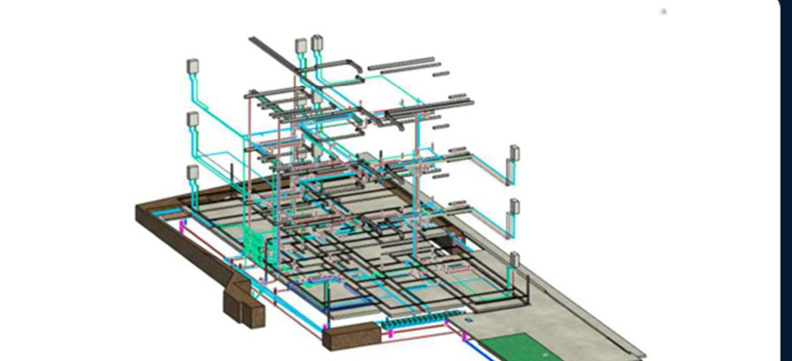
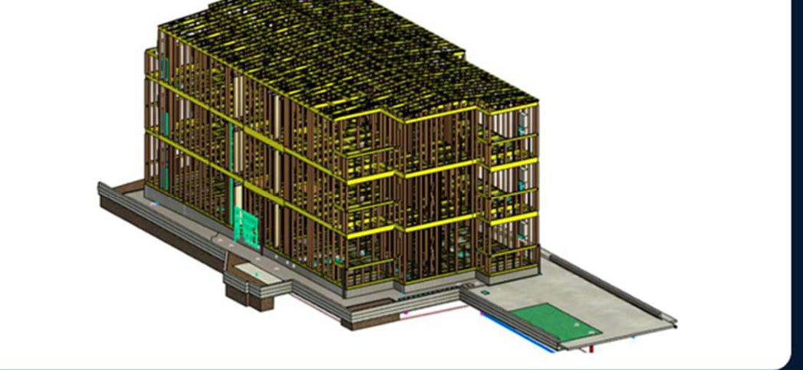

人手不足で現場担当者の負担を減らしたいEase the load on site staff amid labor shortages.
BIM keeps the job site running
Construction BIM / Kobe — Da Nang
現場で使えないBIMなら、
ない方がマシだ。If BIM cannot keep the site moving, it is better not to have it.
法規・施工性・納まりを前提に、現場で止まらないBIMをつくります。図面を先に3Dで組み、図面同士の食い違いと、まだ決まっていない事項を着工前に洗い出す。BIMを「作る」ではなく、BIMで「止めない」。Tojo nexusは、そのための技術パートナーです。
We model for code, constructability, and detailing. We build the drawings in 3D first and surface every conflict and open item before work begins—not BIM for its own sake, but BIM that keeps the job running.
Issues
こんな課題、感じていませんか。Do any of these sound familiar?
ひとつでも当てはまるなら、状況整理からで構いません。
If even one applies, we can start by sorting the situation.
判断に至るまでの資料づくりと情報収集に、監督の時間が取られているSupervisors lose their hours to the paperwork that precedes every decision.
図面の不整合で、現場が止まるDrawing conflicts stop the site.
未決定事項が工事中に発覚し、現場が止まるUndecided items surface mid-construction.
設計変更が工事中に発覚し、工期が遅れるLate design changes delay the programme.
BIMを導入したいが、社内に専門人材がいないBIM is needed, but the specialists are not in-house.
海外進出を考えているが、品質管理に不安があるOverseas work raises questions of quality control.
Service
現場が判断できるBIMだけを渡す。We deliver BIM the site can actually decide from.
見た目の3Dではなく、施工前に潰せる情報としてモデルを組みます。図面同士の食い違いと未決事項を、着工前に一覧でお渡しします。
Not a pretty 3D. A model that removes risk before work begins—every conflict and open item, listed before the first day on site.
01 Modeling
BIMモデリング
Architecture, structure, and MEP in one model—conflicts and open items surfaced before contract.
建築・構造・設備を統合。2D図面からの立ち上げ、図面同士の食い違いと未決事項の洗い出し、請負前の質疑まで。
02 Quantity
数量・データ活用
Areas, materials, and parts taken from the model—for estimates that hold.
面積、材料、部材数量をモデルから算出。見積精度と、現場の判断速度を上げます。
03 Dual Hub
グローバル体制
Kobe at the front. Da Nang on production. Two hours apart, one standard.
神戸窓口とダナン制作。時差2時間、代表が現地で品質を見る二拠点です。


Partner
判断の手前を、引き受ける。We take on everything that comes before the decision.
判断は現場監督の仕事。Tojo nexusは、図面同士の食い違いと未決事項を先に整え、監督が判断に専念できる状態でお渡しします。納品して終わりではなく、加工承認前・基礎打設前・上棟前・ボード貼り前の節目で、完成まで伴走します。お渡しする前には、ゼネコンで現場所長を務めた者が「これは現場で判断できる形か」を確かめています。
The decision belongs to the site supervisor. We clear the conflicts and open items first, and hand over a model the site can decide from—then stay with you at every milestone until completion. Before anything leaves us, a former general-contractor site manager checks that it is ready to be decided on.
「BIMで現場を止めない。
BIMで技術者を守る。
BIMで日本の建設を前に進める。」Keep the site moving. Protect the people who build. Move Japanese construction forward.
代表取締役 東條 浩幸 / Hiroyuki Tojo, CEO